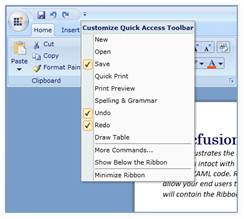

Ribbon now allows the Quick Access Toolbar to synchronize with custom commands defined by the user. The user can add the custom commands to the Synchronized Commands Collection in the Ribbon. Those commands will be synchronized with QAT.
The code describes the implementation:
|
C#
RibbonCommandProvider _syncItem = new RibbonCommandProvider("Synchronized Items", "New", "New32.png") { Command = New }; RibbonCommandProvider _syncItem1 = new RibbonCommandProvider("Synchronized Items", "Open", "Open32.png") { Command = Open }; RibbonCommandProvider _syncItem2 = new RibbonCommandProvider("Synchronized Items", "Save", "Save16.png") { IsSynchronizedwithQAT = true, Command = Save }; RibbonCommandProvider _syncItem3 = new RibbonCommandProvider("Synchronized Items", "Undo", "Undo16.png") { IsSynchronizedwithQAT = true, Command = Undo }; RibbonCommandProvider _syncItem4 = new RibbonCommandProvider("Synchronized Items", "Redo", "Redo16.png") { IsSynchronizedwithQAT = true, Command = Redo }; RibbonCommandProvider _syncItem5 = new RibbonCommandProvider("Synchronized Items", "Quick Print", "Print32.png") { Command = Print }; RibbonCommandProvider _syncItem6 = new RibbonCommandProvider("Synchronized Items", "Print Preview", "preview.png") { Command = PrintPreview }; RibbonCommandProvider _syncItem7 = new RibbonCommandProvider("Synchronized Items", "Spelling & Grammar", "spelling.png") { Command = Spelling }; RibbonCommandProvider _syncItem8 = new RibbonCommandProvider("Synchronized Items", "Draw Table", "Table16.png") { Command = DrawTable };
myRibbon.SynchronizedCommands.Add(_syncItem); myRibbon.SynchronizedCommands.Add(_syncItem1); myRibbon.SynchronizedCommands.Add(_syncItem2); myRibbon.SynchronizedCommands.Add(_syncItem5); myRibbon.SynchronizedCommands.Add(_syncItem6); myRibbon.SynchronizedCommands.Add(_syncItem7); myRibbon.SynchronizedCommands.Add(_syncItem3); myRibbon.SynchronizedCommands.Add(_syncItem4); myRibbon.SynchronizedCommands.Add(_syncItem8); |
The output will be as follows:

Figure 638: Custom commands synchronized with QAT